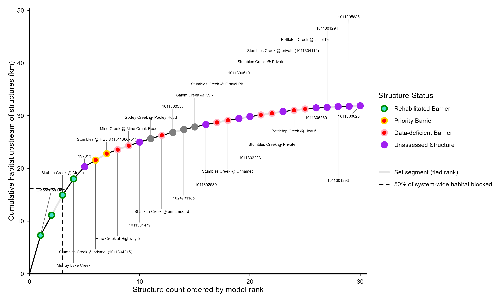
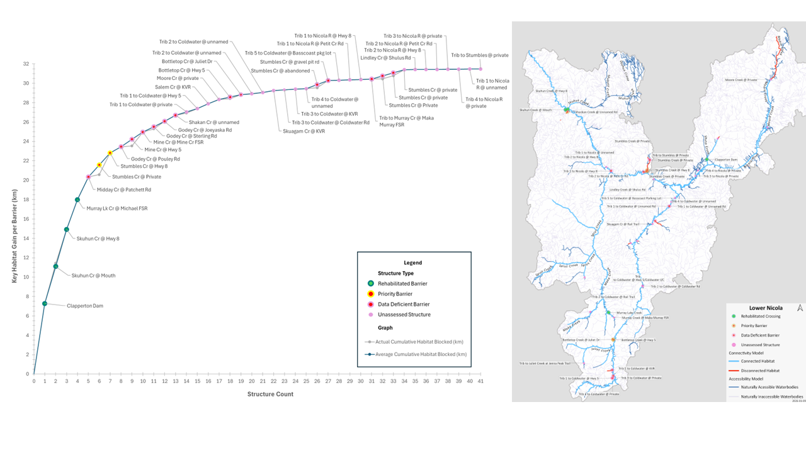

| Habitat Type | Currently connected (km) | Total (km) | Current Connectivity Status | Goal | Gain required (km) |
|---|---|---|---|---|---|
| Spawning and Rearing | 411.42 | 455.59 | 90% | 90% | 25.95 |
Current Connectivity Status
| Focal Species | KEA | Indicator | Poor | Fair | Good | Very Good |
|---|---|---|---|---|---|---|
| Anadromous salmonids | Available off-channel Thermal Refuge | Total Area (m2) of thermal refuge accessible | ? | ? | ? | ? |
| Current Status: |
Comments: No baseline data exists on the extent of overwintering habitat in the watershed. A priority action is included in the Operational Plan (strategy 2.3) to develop a habitat layer, and this will be used to inform this connectivity status assessment in the future.
| Focal Species | KEA | Indicator | Poor | Fair | Good | Very Good |
|---|---|---|---|---|---|---|
| Anadromous salmonids | Available Spawning Habitat | % of total linear spawning habitat accessible | <25% | 26-50% | 51-75% | >75% |
| Current Status: | 92 |
Comments: Indicator rating definitions are based on the consensus decisions of the planning team, including the decision not to define Fair. The current status is based on the connectivity model output, which is current as of December 2024.
| Focal Species | KEA | Indicator | Poor | Fair | Good | Very Good |
|---|---|---|---|---|---|---|
| Anadromous salmonids | Available Rearing Habitat | % of total linear rearing habitat accessible | <25% | 26-50% | 51-75% | >75% |
| Current Status: | 94 |
Comments: Indicator rating definitions are based on the consensus decisions of the planning team, including the decision not to define Fair. The current status is based on the connectivity model output, which is current as of December 2024.
| Goal # | Goal |
|---|---|
| 1 | By 2031, the total area of groundwater-serviced off-channel thermal refuge accessible to anadromous salmonids will increase by 6,000 m2 within the Lower Nicola River watershed. |
| 2 | By 2025, the % of total linear spawning habitat accessible to anadromous salmonids will not decrease below 92% within the Lower Nicola River watershed. |
| 3 | By 2031, the % of total linear rearing habitat accessible to anadromous salmonids will increase from 94% to 90% within the Lower Nicola River watershed. |
Habitat Accumulation Summary Table
dtype('O')| Barrier ID | Site Name | Structure Status | Upstream Habitat Rank | Avg Habitat Gain | Priority | Next Steps | HAC |
|---|---|---|---|---|---|---|---|
| 36b0bcda-4671-45ff-8dea-d1fc8abe3a8d | Clapperton Dam | Rehabilitated barrier | 1 | 7.28 | High | Post-rehabilitation monitoring | yes |
| 197889 | Skuhun Creek @ Hwy 8 | Rehabilitated barrier | 3 | 3.83 | High | Post-rehabilitation monitoring | yes |
| 1011304238 | Skuhun Creek @ Mouth | Rehabilitated barrier | 3 | 3.83 | None | Post-rehabilitation monitoring | yes |
| 196969 | Murray Lake Creek | Rehabilitated barrier | 4 | 3.07 | High | Post-rehabilitation monitoring | yes |
| 197013 | None | None | 6 | 2.33 | None | None | yes |
| 197882 | Stumbles Creek @ private (1011304215) | Priority barrier | 2 | 1.24 | Medium | Engage with barrier owner | yes |
| 197884 | Stumbles @ Hwy 8 (1011300751) | Priority barrier | 2 | 1.24 | Medium | Engage with barrier owner | yes |
| 203627 | Mine Creek at Highway 5 | Non-actionable barrier | 8 | 0.76 | None | Non-actionable | yes |
| 196942 | Mine Creek @ Mine Creek Road | Non-actionable barrier | 8 | 0.76 | None | Non-actionable | yes |
| 1011301479 | None | None | 12 | 0.67 | None | None | yes |
| 197041 | Godey Creek @ Pooley Road | Excluded structure | 5 | 0.65 | None | None | yes |
| 203634 | Shackan Creek @ unnamed rd | Data-deficient barrier | 13 | 0.63 | None | In-depth passage assessment (data deficient structures only) | yes |
| 1011300553 | None | Excluded structure | 9 | 0.55 | None | None | yes |
| 1024731185 | None | Excluded structure | 9 | 0.55 | None | None | yes |
| 1011306461 | Salem Creek @ KVR | Excluded structure | 15 | 0.49 | None | None | yes |
| 1011302589 | None | None | 16 | 0.44 | None | None | yes |
| 203637 | Stumbles Creek @ Gravel Pit | Data-deficient barrier | 7 | 0.41 | None | In-depth habitat investigation (data deficient structures only) | yes |
| 203639 | Stumbles Creek @ Unnamed | Data-deficient barrier | 7 | 0.41 | None | In-depth habitat investigation (data deficient structures only) | yes |
| 1011300510 | None | None | 11 | 0.35 | None | None | yes |
| 1011302223 | None | None | 11 | 0.35 | None | None | yes |
| 203642 | Stumbles Creek @ Private | Data-deficient barrier | 10 | 0.32 | None | In-depth habitat investigation (data deficient structures only) | yes |
| 203641 | Stumbles Creek @ Private | Data-deficient barrier | 10 | 0.32 | None | In-depth habitat investigation (data deficient structures only) | yes |
| 1011304112 | Stumbles Creek @ private (1011304112) | None | 10 | 0.32 | None | None | yes |
| 203630 | Bottletop Creek @ Hwy 5 | Non-actionable barrier | 14 | 0.25 | None | Non-actionable | yes |
| 196966 | Bottletop Creek @ Juliet Dr | Non-actionable barrier | 14 | 0.25 | None | Non-actionable | yes |
| 1011306530 | None | None | 18 | 0.21 | None | None | yes |
| 1011301294 | None | None | 17 | 0.11 | None | None | yes |
| 1011301293 | None | None | 17 | 0.11 | None | None | yes |
| 1011305885 | None | None | 19 | 0.08 | None | None | yes |
| 1011303026 | None | None | 19 | 0.08 | None | None | yes |
Habitat Accumulation Curve

Map
